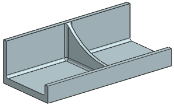

为了便于使用一个表达式来管理肋板，您将创建一个特征组。
打开 des14_suppress_by_expression_rib。

选择格式→组→特征分组。
在特征组名称输入框中键入肋板。
选择添加相依性复选框。
在过滤器输入框中键入 *。
在部件中的特征列表中，双击拉伸 (3)。
该拉伸特征及其从属的边倒圆特征将被添加到组中的特征列表中。
选中嵌入特征组成员复选框。
单击鼠标中键。
拉伸以及边倒圆特征将被嵌入到部件导航器中的特征分组节点中。